Exercise 1453： Let DCBA be a trapezoid with CB//DA and 2CB=3DA. ECBA is a trapezoid with CB//EA and CB=3EA. F, C, B are collinear and 5FB=11FC. CB⊥BA. CB=AB. Prove that DB⊥FE.
Exercise 1456： Let ECBA be a trapezoid with CB//EA and CB=2EA. DCBA is a trapezoid with DC//AB and 2DC=3AB. E, F, A are collinear and FA=2EF. G, C, B are collinear and 5GB=11GC. CB⊥BA. CB=AB. Prove that DB⊥GF.
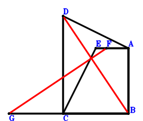
\(\because \) DC//AB and 2DC=3AB \(\therefore \small\overrightarrow{BD}=\dfrac{3 \small\overrightarrow{BA}}{2} + \small\overrightarrow{BC}\).\(\because \) CB//EA and CB=2EA \(\therefore \small\overrightarrow{BE}=\small\overrightarrow{BA} + \dfrac{\small\overrightarrow{BC}}{2}\).\(\because \) E, F, A are collinear and FA=2EF \(\therefore \small\overrightarrow{BF}=\dfrac{\small\overrightarrow{BA}}{3} + \dfrac{2 \small\overrightarrow{BE}}{3}=\small\overrightarrow{BA} + \dfrac{\small\overrightarrow{BC}}{3}\).\(\because \) G, C, B are collinear and 5GB=11GC \(\therefore \small\overrightarrow{BG}=\dfrac{11 \small\overrightarrow{BC}}{6}\).\(\because \) CB=AB \(\therefore - \small\overrightarrow{BA}^{2} + \small\overrightarrow{BC}^{2}=0\) . . . . . . \(①\)\(\because \) CB⊥BA \(\therefore \small\overrightarrow{BA} \cdot \small\overrightarrow{BC}=0\) . . . . . . \(②\)In conclusion, \(\small\overrightarrow{DB} \cdot \small\overrightarrow{FG}=- \small\overrightarrow{BD} \cdot \left(- \small\overrightarrow{BF} + \small\overrightarrow{BG}\right)=- \left(- \small\overrightarrow{BA} + \dfrac{3 \small\overrightarrow{BC}}{2}\right) \cdot \left(\dfrac{3 \small\overrightarrow{BA}}{2} + \small\overrightarrow{BC}\right)=\dfrac{3 \small\overrightarrow{BA}^{2}}{2} - \dfrac{5 \small\overrightarrow{BA} \cdot \small\overrightarrow{BC}}{4} - \dfrac{3 \small\overrightarrow{BC}^{2}}{2}=-3/2\cdot①-5/4\cdot②=0\), that is, DB⊥GF.
Exercise 1458： Let ECBA be a square. DCBA is a trapezoid with DC//AB and 2DC=3AB. G, C, B are collinear and 5GB=11GC. E, F, A are collinear and EF=2FA. Prove that DB⊥GF.
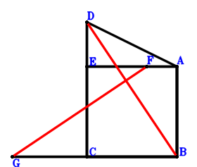
\(\because \) DC//AB and 2DC=3AB \(\therefore \small\overrightarrow{BD}=\dfrac{3 \small\overrightarrow{BA}}{2} + \small\overrightarrow{BC}\).\(\because \) ECBA is a parallelogram \(\therefore \small\overrightarrow{BE}=\small\overrightarrow{BA} + \small\overrightarrow{BC}\).\(\because \) E, F, A are collinear and EF=2FA \(\therefore \small\overrightarrow{BF}=\dfrac{2 \small\overrightarrow{BA}}{3} + \dfrac{\small\overrightarrow{BE}}{3}=\small\overrightarrow{BA} + \dfrac{\small\overrightarrow{BC}}{3}\).\(\because \) G, C, B are collinear and 5GB=11GC \(\therefore \small\overrightarrow{BG}=\dfrac{11 \small\overrightarrow{BC}}{6}\).\(\because \) CB=AB \(\therefore - \small\overrightarrow{BA}^{2} + \small\overrightarrow{BC}^{2}=0\) . . . . . . \(①\)\(\because \) CB⊥BA \(\therefore \small\overrightarrow{BA} \cdot \small\overrightarrow{BC}=0\) . . . . . . \(②\)In conclusion, \(\small\overrightarrow{DB} \cdot \small\overrightarrow{FG}=- \small\overrightarrow{BD} \cdot \left(- \small\overrightarrow{BF} + \small\overrightarrow{BG}\right)=- \left(- \small\overrightarrow{BA} + \dfrac{3 \small\overrightarrow{BC}}{2}\right) \cdot \left(\dfrac{3 \small\overrightarrow{BA}}{2} + \small\overrightarrow{BC}\right)=\dfrac{3 \small\overrightarrow{BA}^{2}}{2} - \dfrac{5 \small\overrightarrow{BA} \cdot \small\overrightarrow{BC}}{4} - \dfrac{3 \small\overrightarrow{BC}^{2}}{2}=-3/2\cdot①-5/4\cdot②=0\), that is, DB⊥GF.
Exercise 1462： Let DCBA be a trapezoid with DC//AB and 2DC=3AB. ACFB is a trapezoid with AB//CF and 2AB=11CF. G, F, B are collinear and 5GB=11GF. C, E, A are collinear and CE=2EA. CB⊥BA. CB=AB. Prove that DB⊥GE.
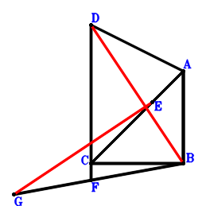
\(\because \) DC//AB and 2DC=3AB \(\therefore \small\overrightarrow{BD}=\dfrac{3 \small\overrightarrow{BA}}{2} + \small\overrightarrow{BC}\).\(\because \) C, E, A are collinear and CE=2EA \(\therefore \small\overrightarrow{BE}=\dfrac{2 \small\overrightarrow{BA}}{3} + \dfrac{\small\overrightarrow{BC}}{3}\).\(\because \) AB//CF and 2AB=11CF \(\therefore \small\overrightarrow{BF}=- \dfrac{2 \small\overrightarrow{BA}}{11} + \small\overrightarrow{BC}\).\(\because \) G, F, B are collinear and 5GB=11GF \(\therefore \small\overrightarrow{BG}=\dfrac{11 \small\overrightarrow{BF}}{6}=- \dfrac{\small\overrightarrow{BA}}{3} + \dfrac{11 \small\overrightarrow{BC}}{6}\).\(\because \) CB=AB \(\therefore - \small\overrightarrow{BA}^{2} + \small\overrightarrow{BC}^{2}=0\) . . . . . . \(①\)\(\because \) CB⊥BA \(\therefore \small\overrightarrow{BA} \cdot \small\overrightarrow{BC}=0\) . . . . . . \(②\)In conclusion, \(\small\overrightarrow{DB} \cdot \small\overrightarrow{EG}=- \small\overrightarrow{BD} \cdot \left(- \small\overrightarrow{BE} + \small\overrightarrow{BG}\right)=- \left(- \small\overrightarrow{BA} + \dfrac{3 \small\overrightarrow{BC}}{2}\right) \cdot \left(\dfrac{3 \small\overrightarrow{BA}}{2} + \small\overrightarrow{BC}\right)=\dfrac{3 \small\overrightarrow{BA}^{2}}{2} - \dfrac{5 \small\overrightarrow{BA} \cdot \small\overrightarrow{BC}}{4} - \dfrac{3 \small\overrightarrow{BC}^{2}}{2}=-3/2\cdot①-5/4\cdot②=0\), that is, DB⊥GE.
Exercise 1468： Let FCBG be a trapezoid with CB//FG and CB=3FG. DCBA is a trapezoid with CB//DA and CB=3DA. E, C, B are collinear and 5EB=11EC. F is the midpoint of AB. CB⊥BA. CB=AB. Prove that ED⊥AG.
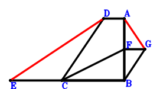
\(\because \) CB//DA and CB=3DA \(\therefore \small\overrightarrow{BD}=\small\overrightarrow{BA} + \dfrac{\small\overrightarrow{BC}}{3}\).\(\because \) E, C, B are collinear and 5EB=11EC \(\therefore \small\overrightarrow{BE}=\dfrac{11 \small\overrightarrow{BC}}{6}\).\(\because \) F is the midpoint of AB \(\therefore \small\overrightarrow{BF}=\dfrac{\small\overrightarrow{BA}}{2}\).\(\because \) CB//FG and CB=3FG \(\therefore \small\overrightarrow{BG}=\dfrac{\small\overrightarrow{BA}}{2} - \dfrac{\small\overrightarrow{BC}}{3}\).\(\because \) CB=AB \(\therefore - \small\overrightarrow{BA}^{2} + \small\overrightarrow{BC}^{2}=0\) . . . . . . \(①\)\(\because \) CB⊥BA \(\therefore \small\overrightarrow{BA} \cdot \small\overrightarrow{BC}=0\) . . . . . . \(②\)In conclusion, \(\small\overrightarrow{AG} \cdot \small\overrightarrow{DE}=\left(- \small\overrightarrow{BA} + \small\overrightarrow{BG}\right) \cdot \left(- \small\overrightarrow{BD} + \small\overrightarrow{BE}\right)=\left(- \small\overrightarrow{BA} + \dfrac{3 \small\overrightarrow{BC}}{2}\right) \cdot \left(- \dfrac{\small\overrightarrow{BA}}{2} - \dfrac{\small\overrightarrow{BC}}{3}\right)=\dfrac{\small\overrightarrow{BA}^{2}}{2} - \dfrac{5 \small\overrightarrow{BA} \cdot \small\overrightarrow{BC}}{12} - \dfrac{\small\overrightarrow{BC}^{2}}{2}=-1/2\cdot①-5/12\cdot②=0\), that is, ED⊥AG.
Exercise 1471： Let DCBA be a trapezoid with CB//DA and 2CB=3DA. E, C, B are collinear and EB=3EC. CB⊥BA. CB=AB. Prove that DB⊥EA.
Exercise 1477： Let GCBA be a trapezoid with CB//GA and CB=3GA. DBFE is a trapezoid with BF//DE and BF=3DE. C, D, A are collinear and CD=2DA. H, C, B are collinear and 5HB=11HC. E is the midpoint of AB. CB⊥BA. CB=AB. Prove that AF⊥HG.
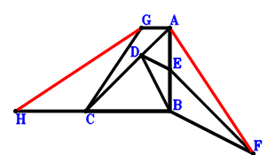
\(\because \) C, D, A are collinear and CD=2DA \(\therefore \small\overrightarrow{BD}=\dfrac{2 \small\overrightarrow{BA}}{3} + \dfrac{\small\overrightarrow{BC}}{3}\).\(\because \) E is the midpoint of AB \(\therefore \small\overrightarrow{BE}=\dfrac{\small\overrightarrow{BA}}{2}\).\(\because \) BF//DE and BF=3DE \(\therefore \small\overrightarrow{BF}=\dfrac{3 \small\overrightarrow{BA}}{2} - 3 \small\overrightarrow{BD}=- \dfrac{\small\overrightarrow{BA}}{2} - \small\overrightarrow{BC}\).\(\because \) CB//GA and CB=3GA \(\therefore \small\overrightarrow{BG}=\small\overrightarrow{BA} + \dfrac{\small\overrightarrow{BC}}{3}\).\(\because \) H, C, B are collinear and 5HB=11HC \(\therefore \small\overrightarrow{BH}=\dfrac{11 \small\overrightarrow{BC}}{6}\).\(\because \) CB=AB \(\therefore - \small\overrightarrow{BA}^{2} + \small\overrightarrow{BC}^{2}=0\) . . . . . . \(①\)\(\because \) CB⊥BA \(\therefore \small\overrightarrow{BA} \cdot \small\overrightarrow{BC}=0\) . . . . . . \(②\)In conclusion, \(\small\overrightarrow{AF} \cdot \small\overrightarrow{GH}=\left(- \small\overrightarrow{BA} + \small\overrightarrow{BF}\right) \cdot \left(- \small\overrightarrow{BG} + \small\overrightarrow{BH}\right)=\left(- \dfrac{3 \small\overrightarrow{BA}}{2} - \small\overrightarrow{BC}\right) \cdot \left(- \small\overrightarrow{BA} + \dfrac{3 \small\overrightarrow{BC}}{2}\right)=\dfrac{3 \small\overrightarrow{BA}^{2}}{2} - \dfrac{5 \small\overrightarrow{BA} \cdot \small\overrightarrow{BC}}{4} - \dfrac{3 \small\overrightarrow{BC}^{2}}{2}=-3/2\cdot①-5/4\cdot②=0\), that is, AF⊥HG.
Exercise 1489： Let GCBA be a square. DBFE is a trapezoid with BF//DE and BF=3DE. I, C, B are collinear and 5IB=11IC. C, D, A are collinear and CD=2DA. G, H, A are collinear and GH=2HA. E is the midpoint of AB. Prove that AF⊥IH.
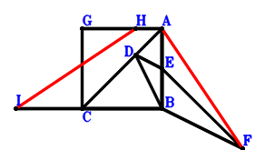
\(\because \) C, D, A are collinear and CD=2DA \(\therefore \small\overrightarrow{BD}=\dfrac{2 \small\overrightarrow{BA}}{3} + \dfrac{\small\overrightarrow{BC}}{3}\).\(\because \) E is the midpoint of AB \(\therefore \small\overrightarrow{BE}=\dfrac{\small\overrightarrow{BA}}{2}\).\(\because \) BF//DE and BF=3DE \(\therefore \small\overrightarrow{BF}=\dfrac{3 \small\overrightarrow{BA}}{2} - 3 \small\overrightarrow{BD}=- \dfrac{\small\overrightarrow{BA}}{2} - \small\overrightarrow{BC}\).\(\because \) GCBA is a parallelogram \(\therefore \small\overrightarrow{BG}=\small\overrightarrow{BA} + \small\overrightarrow{BC}\).\(\because \) G, H, A are collinear and GH=2HA \(\therefore \small\overrightarrow{BH}=\dfrac{2 \small\overrightarrow{BA}}{3} + \dfrac{\small\overrightarrow{BG}}{3}=\small\overrightarrow{BA} + \dfrac{\small\overrightarrow{BC}}{3}\).\(\because \) I, C, B are collinear and 5IB=11IC \(\therefore \small\overrightarrow{BI}=\dfrac{11 \small\overrightarrow{BC}}{6}\).\(\because \) CB=AB \(\therefore - \small\overrightarrow{BA}^{2} + \small\overrightarrow{BC}^{2}=0\) . . . . . . \(①\)\(\because \) CB⊥BA \(\therefore \small\overrightarrow{BA} \cdot \small\overrightarrow{BC}=0\) . . . . . . \(②\)In conclusion, \(\small\overrightarrow{AF} \cdot \small\overrightarrow{HI}=\left(- \small\overrightarrow{BA} + \small\overrightarrow{BF}\right) \cdot \left(- \small\overrightarrow{BH} + \small\overrightarrow{BI}\right)=\left(- \dfrac{3 \small\overrightarrow{BA}}{2} - \small\overrightarrow{BC}\right) \cdot \left(- \small\overrightarrow{BA} + \dfrac{3 \small\overrightarrow{BC}}{2}\right)=\dfrac{3 \small\overrightarrow{BA}^{2}}{2} - \dfrac{5 \small\overrightarrow{BA} \cdot \small\overrightarrow{BC}}{4} - \dfrac{3 \small\overrightarrow{BC}^{2}}{2}=-3/2\cdot①-5/4\cdot②=0\), that is, AF⊥IH.
Exercise 1498： Let ECDA be a trapezoid with EC//AD and EC=3AD. AGHB is a trapezoid with AB//GH and AB=3GH. G, C, B are collinear and 5GB=11GC. C, F, A are collinear and CF=2FA. D is the midpoint of AB. CB⊥BA. CB=AB. Prove that EB⊥HF.
\(\because \) D is the midpoint of AB \(\therefore \small\overrightarrow{BD}=\dfrac{\small\overrightarrow{BA}}{2}\).\(\because \) EC//AD and EC=3AD \(\therefore \small\overrightarrow{BE}=3 \small\overrightarrow{BA} + \small\overrightarrow{BC} - 3 \small\overrightarrow{BD}=\dfrac{3 \small\overrightarrow{BA}}{2} + \small\overrightarrow{BC}\).\(\because \) C, F, A are collinear and CF=2FA \(\therefore \small\overrightarrow{BF}=\dfrac{2 \small\overrightarrow{BA}}{3} + \dfrac{\small\overrightarrow{BC}}{3}\).\(\because \) G, C, B are collinear and 5GB=11GC \(\therefore \small\overrightarrow{BG}=\dfrac{11 \small\overrightarrow{BC}}{6}\).\(\because \) AB//GH and AB=3GH \(\therefore \small\overrightarrow{BH}=- \dfrac{\small\overrightarrow{BA}}{3} + \dfrac{11 \small\overrightarrow{BC}}{6}\).\(\because \) CB=AB \(\therefore - \small\overrightarrow{BA}^{2} + \small\overrightarrow{BC}^{2}=0\) . . . . . . \(①\)\(\because \) CB⊥BA \(\therefore \small\overrightarrow{BA} \cdot \small\overrightarrow{BC}=0\) . . . . . . \(②\)In conclusion, \(\small\overrightarrow{EB} \cdot \small\overrightarrow{FH}=- \small\overrightarrow{BE} \cdot \left(- \small\overrightarrow{BF} + \small\overrightarrow{BH}\right)=- \left(- \small\overrightarrow{BA} + \dfrac{3 \small\overrightarrow{BC}}{2}\right) \cdot \left(\dfrac{3 \small\overrightarrow{BA}}{2} + \small\overrightarrow{BC}\right)=\dfrac{3 \small\overrightarrow{BA}^{2}}{2} - \dfrac{5 \small\overrightarrow{BA} \cdot \small\overrightarrow{BC}}{4} - \dfrac{3 \small\overrightarrow{BC}^{2}}{2}=-3/2\cdot①-5/4\cdot②=0\), that is, EB⊥HF.
Exercise 1505： Let AGHB be a trapezoid with AB//GH and AB=3GH. DBFE is a trapezoid with BF//DE and BF=3DE. G, C, B are collinear and 5GB=11GC. C, D, A are collinear and CD=2DA. E is the midpoint of AB. CB⊥BA. CB=AB. Prove that AF⊥HD.
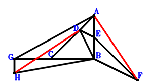
\(\because \) C, D, A are collinear and CD=2DA \(\therefore \small\overrightarrow{BD}=\dfrac{2 \small\overrightarrow{BA}}{3} + \dfrac{\small\overrightarrow{BC}}{3}\).\(\because \) E is the midpoint of AB \(\therefore \small\overrightarrow{BE}=\dfrac{\small\overrightarrow{BA}}{2}\).\(\because \) BF//DE and BF=3DE \(\therefore \small\overrightarrow{BF}=\dfrac{3 \small\overrightarrow{BA}}{2} - 3 \small\overrightarrow{BD}=- \dfrac{\small\overrightarrow{BA}}{2} - \small\overrightarrow{BC}\).\(\because \) G, C, B are collinear and 5GB=11GC \(\therefore \small\overrightarrow{BG}=\dfrac{11 \small\overrightarrow{BC}}{6}\).\(\because \) AB//GH and AB=3GH \(\therefore \small\overrightarrow{BH}=- \dfrac{\small\overrightarrow{BA}}{3} + \dfrac{11 \small\overrightarrow{BC}}{6}\).\(\because \) CB=AB \(\therefore - \small\overrightarrow{BA}^{2} + \small\overrightarrow{BC}^{2}=0\) . . . . . . \(①\)\(\because \) CB⊥BA \(\therefore \small\overrightarrow{BA} \cdot \small\overrightarrow{BC}=0\) . . . . . . \(②\)In conclusion, \(\small\overrightarrow{AF} \cdot \small\overrightarrow{DH}=\left(- \small\overrightarrow{BA} + \small\overrightarrow{BF}\right) \cdot \left(- \small\overrightarrow{BD} + \small\overrightarrow{BH}\right)=\left(- \dfrac{3 \small\overrightarrow{BA}}{2} - \small\overrightarrow{BC}\right) \cdot \left(- \small\overrightarrow{BA} + \dfrac{3 \small\overrightarrow{BC}}{2}\right)=\dfrac{3 \small\overrightarrow{BA}^{2}}{2} - \dfrac{5 \small\overrightarrow{BA} \cdot \small\overrightarrow{BC}}{4} - \dfrac{3 \small\overrightarrow{BC}^{2}}{2}=-3/2\cdot①-5/4\cdot②=0\), that is, AF⊥HD.
Exercise 1507： Let FEBA be a trapezoid with AB//FE and AB=3FE. D, C, B are collinear and DB=3DC. C, E, A are collinear and CE=2EA. G is the midpoint of AB. CB⊥BA. CB=AB. Prove that DA⊥FG.
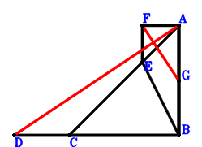
\(\because \) D, C, B are collinear and DB=3DC \(\therefore \small\overrightarrow{BD}=\dfrac{3 \small\overrightarrow{BC}}{2}\).\(\because \) C, E, A are collinear and CE=2EA \(\therefore \small\overrightarrow{BE}=\dfrac{2 \small\overrightarrow{BA}}{3} + \dfrac{\small\overrightarrow{BC}}{3}\).\(\because \) AB//FE and AB=3FE \(\therefore \small\overrightarrow{BF}=\small\overrightarrow{BA} + \dfrac{\small\overrightarrow{BC}}{3}\).\(\because \) G is the midpoint of AB \(\therefore \small\overrightarrow{BG}=\dfrac{\small\overrightarrow{BA}}{2}\).\(\because \) CB=AB \(\therefore - \small\overrightarrow{BA}^{2} + \small\overrightarrow{BC}^{2}=0\) . . . . . . \(①\)\(\because \) CB⊥BA \(\therefore \small\overrightarrow{BA} \cdot \small\overrightarrow{BC}=0\) . . . . . . \(②\)In conclusion, \(\small\overrightarrow{AD} \cdot \small\overrightarrow{FG}=\left(- \small\overrightarrow{BA} + \small\overrightarrow{BD}\right) \cdot \left(- \small\overrightarrow{BF} + \small\overrightarrow{BG}\right)=\left(- \small\overrightarrow{BA} + \dfrac{3 \small\overrightarrow{BC}}{2}\right) \cdot \left(- \dfrac{\small\overrightarrow{BA}}{2} - \dfrac{\small\overrightarrow{BC}}{3}\right)=\dfrac{\small\overrightarrow{BA}^{2}}{2} - \dfrac{5 \small\overrightarrow{BA} \cdot \small\overrightarrow{BC}}{12} - \dfrac{\small\overrightarrow{BC}^{2}}{2}=-1/2\cdot①-5/12\cdot②=0\), that is, DA⊥FG.
Exercise 1508： Let ECDA be a trapezoid with EC//AD and EC=3AD. FCBA is a trapezoid with CB//FA and CB=3FA. G, C, B are collinear and 5GB=11GC. D is the midpoint of AB. CB⊥BA. CB=AB. Prove that EB⊥GF.
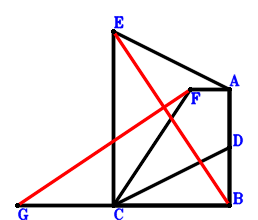
\(\because \) D is the midpoint of AB \(\therefore \small\overrightarrow{BD}=\dfrac{\small\overrightarrow{BA}}{2}\).\(\because \) EC//AD and EC=3AD \(\therefore \small\overrightarrow{BE}=3 \small\overrightarrow{BA} + \small\overrightarrow{BC} - 3 \small\overrightarrow{BD}=\dfrac{3 \small\overrightarrow{BA}}{2} + \small\overrightarrow{BC}\).\(\because \) CB//FA and CB=3FA \(\therefore \small\overrightarrow{BF}=\small\overrightarrow{BA} + \dfrac{\small\overrightarrow{BC}}{3}\).\(\because \) G, C, B are collinear and 5GB=11GC \(\therefore \small\overrightarrow{BG}=\dfrac{11 \small\overrightarrow{BC}}{6}\).\(\because \) CB=AB \(\therefore - \small\overrightarrow{BA}^{2} + \small\overrightarrow{BC}^{2}=0\) . . . . . . \(①\)\(\because \) CB⊥BA \(\therefore \small\overrightarrow{BA} \cdot \small\overrightarrow{BC}=0\) . . . . . . \(②\)In conclusion, \(\small\overrightarrow{EB} \cdot \small\overrightarrow{FG}=- \small\overrightarrow{BE} \cdot \left(- \small\overrightarrow{BF} + \small\overrightarrow{BG}\right)=- \left(- \small\overrightarrow{BA} + \dfrac{3 \small\overrightarrow{BC}}{2}\right) \cdot \left(\dfrac{3 \small\overrightarrow{BA}}{2} + \small\overrightarrow{BC}\right)=\dfrac{3 \small\overrightarrow{BA}^{2}}{2} - \dfrac{5 \small\overrightarrow{BA} \cdot \small\overrightarrow{BC}}{4} - \dfrac{3 \small\overrightarrow{BC}^{2}}{2}=-3/2\cdot①-5/4\cdot②=0\), that is, EB⊥GF.
Exercise 1513： Let ECDA be a trapezoid with EC//AD and EC=3AD. FCBA is a trapezoid with CB//FA and CB=2FA. F, G, A are collinear and GA=2FG. H, C, B are collinear and 5HB=11HC. D is the midpoint of AB. CB⊥BA. CB=AB. Prove that EB⊥HG.
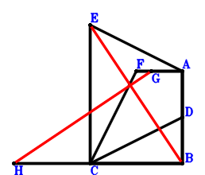
\(\because \) D is the midpoint of AB \(\therefore \small\overrightarrow{BD}=\dfrac{\small\overrightarrow{BA}}{2}\).\(\because \) EC//AD and EC=3AD \(\therefore \small\overrightarrow{BE}=3 \small\overrightarrow{BA} + \small\overrightarrow{BC} - 3 \small\overrightarrow{BD}=\dfrac{3 \small\overrightarrow{BA}}{2} + \small\overrightarrow{BC}\).\(\because \) CB//FA and CB=2FA \(\therefore \small\overrightarrow{BF}=\small\overrightarrow{BA} + \dfrac{\small\overrightarrow{BC}}{2}\).\(\because \) F, G, A are collinear and GA=2FG \(\therefore \small\overrightarrow{BG}=\dfrac{\small\overrightarrow{BA}}{3} + \dfrac{2 \small\overrightarrow{BF}}{3}=\small\overrightarrow{BA} + \dfrac{\small\overrightarrow{BC}}{3}\).\(\because \) H, C, B are collinear and 5HB=11HC \(\therefore \small\overrightarrow{BH}=\dfrac{11 \small\overrightarrow{BC}}{6}\).\(\because \) CB=AB \(\therefore - \small\overrightarrow{BA}^{2} + \small\overrightarrow{BC}^{2}=0\) . . . . . . \(①\)\(\because \) CB⊥BA \(\therefore \small\overrightarrow{BA} \cdot \small\overrightarrow{BC}=0\) . . . . . . \(②\)In conclusion, \(\small\overrightarrow{EB} \cdot \small\overrightarrow{GH}=- \small\overrightarrow{BE} \cdot \left(- \small\overrightarrow{BG} + \small\overrightarrow{BH}\right)=- \left(- \small\overrightarrow{BA} + \dfrac{3 \small\overrightarrow{BC}}{2}\right) \cdot \left(\dfrac{3 \small\overrightarrow{BA}}{2} + \small\overrightarrow{BC}\right)=\dfrac{3 \small\overrightarrow{BA}^{2}}{2} - \dfrac{5 \small\overrightarrow{BA} \cdot \small\overrightarrow{BC}}{4} - \dfrac{3 \small\overrightarrow{BC}^{2}}{2}=-3/2\cdot①-5/4\cdot②=0\), that is, EB⊥HG.
Exercise 1516： Let FCBA be a square. ECDA is a trapezoid with EC//AD and EC=3AD. H, C, B are collinear and 5HB=11HC. F, G, A are collinear and FG=2GA. D is the midpoint of AB. Prove that EB⊥HG.
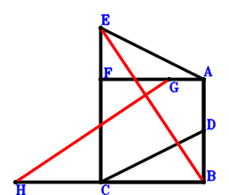
\(\because \) D is the midpoint of AB \(\therefore \small\overrightarrow{BD}=\dfrac{\small\overrightarrow{BA}}{2}\).\(\because \) EC//AD and EC=3AD \(\therefore \small\overrightarrow{BE}=3 \small\overrightarrow{BA} + \small\overrightarrow{BC} - 3 \small\overrightarrow{BD}=\dfrac{3 \small\overrightarrow{BA}}{2} + \small\overrightarrow{BC}\).\(\because \) FCBA is a parallelogram \(\therefore \small\overrightarrow{BF}=\small\overrightarrow{BA} + \small\overrightarrow{BC}\).\(\because \) F, G, A are collinear and FG=2GA \(\therefore \small\overrightarrow{BG}=\dfrac{2 \small\overrightarrow{BA}}{3} + \dfrac{\small\overrightarrow{BF}}{3}=\small\overrightarrow{BA} + \dfrac{\small\overrightarrow{BC}}{3}\).\(\because \) H, C, B are collinear and 5HB=11HC \(\therefore \small\overrightarrow{BH}=\dfrac{11 \small\overrightarrow{BC}}{6}\).\(\because \) CB=AB \(\therefore - \small\overrightarrow{BA}^{2} + \small\overrightarrow{BC}^{2}=0\) . . . . . . \(①\)\(\because \) CB⊥BA \(\therefore \small\overrightarrow{BA} \cdot \small\overrightarrow{BC}=0\) . . . . . . \(②\)In conclusion, \(\small\overrightarrow{EB} \cdot \small\overrightarrow{GH}=- \small\overrightarrow{BE} \cdot \left(- \small\overrightarrow{BG} + \small\overrightarrow{BH}\right)=- \left(- \small\overrightarrow{BA} + \dfrac{3 \small\overrightarrow{BC}}{2}\right) \cdot \left(\dfrac{3 \small\overrightarrow{BA}}{2} + \small\overrightarrow{BC}\right)=\dfrac{3 \small\overrightarrow{BA}^{2}}{2} - \dfrac{5 \small\overrightarrow{BA} \cdot \small\overrightarrow{BC}}{4} - \dfrac{3 \small\overrightarrow{BC}^{2}}{2}=-3/2\cdot①-5/4\cdot②=0\), that is, EB⊥HG.
Exercise 1524： Let EDBA be a trapezoid with AB//ED and AB=3ED. ACBG is a trapezoid with CB//AG and 2CB=3AG. C, D, A are collinear and CD=2DA. F, C, B are collinear and 5FB=11FC. H is the midpoint of BG. CB⊥BA. CB=AB. Prove that FE⊥AH.
\(\because \) C, D, A are collinear and CD=2DA \(\therefore \small\overrightarrow{BD}=\dfrac{2 \small\overrightarrow{BA}}{3} + \dfrac{\small\overrightarrow{BC}}{3}\).\(\because \) AB//ED and AB=3ED \(\therefore \small\overrightarrow{BE}=\small\overrightarrow{BA} + \dfrac{\small\overrightarrow{BC}}{3}\).\(\because \) F, C, B are collinear and 5FB=11FC \(\therefore \small\overrightarrow{BF}=\dfrac{11 \small\overrightarrow{BC}}{6}\).\(\because \) CB//AG and 2CB=3AG \(\therefore \small\overrightarrow{BG}=\small\overrightarrow{BA} - \dfrac{2 \small\overrightarrow{BC}}{3}\).\(\because \) H is the midpoint of BG \(\therefore \small\overrightarrow{BH}=\dfrac{\small\overrightarrow{BG}}{2}=\dfrac{\small\overrightarrow{BA}}{2} - \dfrac{\small\overrightarrow{BC}}{3}\).\(\because \) CB=AB \(\therefore - \small\overrightarrow{BA}^{2} + \small\overrightarrow{BC}^{2}=0\) . . . . . . \(①\)\(\because \) CB⊥BA \(\therefore \small\overrightarrow{BA} \cdot \small\overrightarrow{BC}=0\) . . . . . . \(②\)In conclusion, \(\small\overrightarrow{AH} \cdot \small\overrightarrow{EF}=\left(- \small\overrightarrow{BA} + \small\overrightarrow{BH}\right) \cdot \left(- \small\overrightarrow{BE} + \small\overrightarrow{BF}\right)=\left(- \small\overrightarrow{BA} + \dfrac{3 \small\overrightarrow{BC}}{2}\right) \cdot \left(- \dfrac{\small\overrightarrow{BA}}{2} - \dfrac{\small\overrightarrow{BC}}{3}\right)=\dfrac{\small\overrightarrow{BA}^{2}}{2} - \dfrac{5 \small\overrightarrow{BA} \cdot \small\overrightarrow{BC}}{12} - \dfrac{\small\overrightarrow{BC}^{2}}{2}=-1/2\cdot①-5/12\cdot②=0\), that is, FE⊥AH.
Exercise 1533： Let ECDA be a trapezoid with EC//AD and EC=3AD. F, C, B are collinear and FB=3FC. D is the midpoint of AB. CB⊥BA. CB=AB. Prove that EB⊥FA.
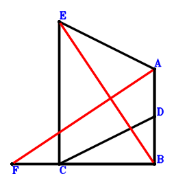
\(\because \) D is the midpoint of AB \(\therefore \small\overrightarrow{BD}=\dfrac{\small\overrightarrow{BA}}{2}\).\(\because \) EC//AD and EC=3AD \(\therefore \small\overrightarrow{BE}=3 \small\overrightarrow{BA} + \small\overrightarrow{BC} - 3 \small\overrightarrow{BD}=\dfrac{3 \small\overrightarrow{BA}}{2} + \small\overrightarrow{BC}\).\(\because \) F, C, B are collinear and FB=3FC \(\therefore \small\overrightarrow{BF}=\dfrac{3 \small\overrightarrow{BC}}{2}\).\(\because \) CB=AB \(\therefore - \small\overrightarrow{BA}^{2} + \small\overrightarrow{BC}^{2}=0\) . . . . . . \(①\)\(\because \) CB⊥BA \(\therefore \small\overrightarrow{BA} \cdot \small\overrightarrow{BC}=0\) . . . . . . \(②\)In conclusion, \(\small\overrightarrow{AF} \cdot \small\overrightarrow{EB}=- \small\overrightarrow{BE} \cdot \left(- \small\overrightarrow{BA} + \small\overrightarrow{BF}\right)=- \left(- \small\overrightarrow{BA} + \dfrac{3 \small\overrightarrow{BC}}{2}\right) \cdot \left(\dfrac{3 \small\overrightarrow{BA}}{2} + \small\overrightarrow{BC}\right)=\dfrac{3 \small\overrightarrow{BA}^{2}}{2} - \dfrac{5 \small\overrightarrow{BA} \cdot \small\overrightarrow{BC}}{4} - \dfrac{3 \small\overrightarrow{BC}^{2}}{2}=-3/2\cdot①-5/4\cdot②=0\), that is, EB⊥FA.
Exercise 1536： Let ECBA be a trapezoid with CB//EA and CB=2EA. D, C, B are collinear and DB=3DC. E, F, A are collinear and FA=2EF. G is the midpoint of AB. CB⊥BA. CB=AB. Prove that DA⊥FG.
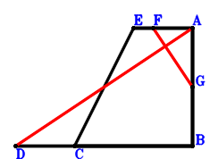
\(\because \) D, C, B are collinear and DB=3DC \(\therefore \small\overrightarrow{BD}=\dfrac{3 \small\overrightarrow{BC}}{2}\).\(\because \) CB//EA and CB=2EA \(\therefore \small\overrightarrow{BE}=\small\overrightarrow{BA} + \dfrac{\small\overrightarrow{BC}}{2}\).\(\because \) E, F, A are collinear and FA=2EF \(\therefore \small\overrightarrow{BF}=\dfrac{\small\overrightarrow{BA}}{3} + \dfrac{2 \small\overrightarrow{BE}}{3}=\small\overrightarrow{BA} + \dfrac{\small\overrightarrow{BC}}{3}\).\(\because \) G is the midpoint of AB \(\therefore \small\overrightarrow{BG}=\dfrac{\small\overrightarrow{BA}}{2}\).\(\because \) CB=AB \(\therefore - \small\overrightarrow{BA}^{2} + \small\overrightarrow{BC}^{2}=0\) . . . . . . \(①\)\(\because \) CB⊥BA \(\therefore \small\overrightarrow{BA} \cdot \small\overrightarrow{BC}=0\) . . . . . . \(②\)In conclusion, \(\small\overrightarrow{AD} \cdot \small\overrightarrow{FG}=\left(- \small\overrightarrow{BA} + \small\overrightarrow{BD}\right) \cdot \left(- \small\overrightarrow{BF} + \small\overrightarrow{BG}\right)=\left(- \small\overrightarrow{BA} + \dfrac{3 \small\overrightarrow{BC}}{2}\right) \cdot \left(- \dfrac{\small\overrightarrow{BA}}{2} - \dfrac{\small\overrightarrow{BC}}{3}\right)=\dfrac{\small\overrightarrow{BA}^{2}}{2} - \dfrac{5 \small\overrightarrow{BA} \cdot \small\overrightarrow{BC}}{12} - \dfrac{\small\overrightarrow{BC}^{2}}{2}=-1/2\cdot①-5/12\cdot②=0\), that is, DA⊥FG.
Exercise 1539： Let GCBA be a square. ACEB is a trapezoid with AB//CE and 2AB=11CE. C, D, A are collinear and CD=2DA. F, E, B are collinear and 5FB=11FE. G, H, A are collinear and GH=2HA. I is the midpoint of AB. Prove that FD⊥HI.
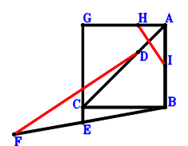
\(\because \) C, D, A are collinear and CD=2DA \(\therefore \small\overrightarrow{BD}=\dfrac{2 \small\overrightarrow{BA}}{3} + \dfrac{\small\overrightarrow{BC}}{3}\).\(\because \) AB//CE and 2AB=11CE \(\therefore \small\overrightarrow{BE}=- \dfrac{2 \small\overrightarrow{BA}}{11} + \small\overrightarrow{BC}\).\(\because \) F, E, B are collinear and 5FB=11FE \(\therefore \small\overrightarrow{BF}=\dfrac{11 \small\overrightarrow{BE}}{6}=- \dfrac{\small\overrightarrow{BA}}{3} + \dfrac{11 \small\overrightarrow{BC}}{6}\).\(\because \) GCBA is a parallelogram \(\therefore \small\overrightarrow{BG}=\small\overrightarrow{BA} + \small\overrightarrow{BC}\).\(\because \) G, H, A are collinear and GH=2HA \(\therefore \small\overrightarrow{BH}=\dfrac{2 \small\overrightarrow{BA}}{3} + \dfrac{\small\overrightarrow{BG}}{3}=\small\overrightarrow{BA} + \dfrac{\small\overrightarrow{BC}}{3}\).\(\because \) I is the midpoint of AB \(\therefore \small\overrightarrow{BI}=\dfrac{\small\overrightarrow{BA}}{2}\).\(\because \) CB=AB \(\therefore - \small\overrightarrow{BA}^{2} + \small\overrightarrow{BC}^{2}=0\) . . . . . . \(①\)\(\because \) CB⊥BA \(\therefore \small\overrightarrow{BA} \cdot \small\overrightarrow{BC}=0\) . . . . . . \(②\)In conclusion, \(\small\overrightarrow{DF} \cdot \small\overrightarrow{HI}=\left(- \small\overrightarrow{BD} + \small\overrightarrow{BF}\right) \cdot \left(- \small\overrightarrow{BH} + \small\overrightarrow{BI}\right)=\left(- \small\overrightarrow{BA} + \dfrac{3 \small\overrightarrow{BC}}{2}\right) \cdot \left(- \dfrac{\small\overrightarrow{BA}}{2} - \dfrac{\small\overrightarrow{BC}}{3}\right)=\dfrac{\small\overrightarrow{BA}^{2}}{2} - \dfrac{5 \small\overrightarrow{BA} \cdot \small\overrightarrow{BC}}{12} - \dfrac{\small\overrightarrow{BC}^{2}}{2}=-1/2\cdot①-5/12\cdot②=0\), that is, FD⊥HI.
Exercise 1540： Let ECBA be a square. D, C, B are collinear and DB=3DC. E, F, A are collinear and EF=2FA. G is the midpoint of AB. Prove that DA⊥FG.
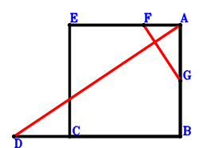
\(\because \) D, C, B are collinear and DB=3DC \(\therefore \small\overrightarrow{BD}=\dfrac{3 \small\overrightarrow{BC}}{2}\).\(\because \) ECBA is a parallelogram \(\therefore \small\overrightarrow{BE}=\small\overrightarrow{BA} + \small\overrightarrow{BC}\).\(\because \) E, F, A are collinear and EF=2FA \(\therefore \small\overrightarrow{BF}=\dfrac{2 \small\overrightarrow{BA}}{3} + \dfrac{\small\overrightarrow{BE}}{3}=\small\overrightarrow{BA} + \dfrac{\small\overrightarrow{BC}}{3}\).\(\because \) G is the midpoint of AB \(\therefore \small\overrightarrow{BG}=\dfrac{\small\overrightarrow{BA}}{2}\).\(\because \) CB=AB \(\therefore - \small\overrightarrow{BA}^{2} + \small\overrightarrow{BC}^{2}=0\) . . . . . . \(①\)\(\because \) CB⊥BA \(\therefore \small\overrightarrow{BA} \cdot \small\overrightarrow{BC}=0\) . . . . . . \(②\)In conclusion, \(\small\overrightarrow{AD} \cdot \small\overrightarrow{FG}=\left(- \small\overrightarrow{BA} + \small\overrightarrow{BD}\right) \cdot \left(- \small\overrightarrow{BF} + \small\overrightarrow{BG}\right)=\left(- \small\overrightarrow{BA} + \dfrac{3 \small\overrightarrow{BC}}{2}\right) \cdot \left(- \dfrac{\small\overrightarrow{BA}}{2} - \dfrac{\small\overrightarrow{BC}}{3}\right)=\dfrac{\small\overrightarrow{BA}^{2}}{2} - \dfrac{5 \small\overrightarrow{BA} \cdot \small\overrightarrow{BC}}{12} - \dfrac{\small\overrightarrow{BC}^{2}}{2}=-1/2\cdot①-5/12\cdot②=0\), that is, DA⊥FG.
Exercise 1545： Let DCBA be a trapezoid with CB//DA and CB=2DA. A, H, B are collinear and AH=5HB. D, E, A are collinear and EA=2DE. F, C, B are collinear and 5FB=11FC. C, G, A are collinear and CG=2GA. CB⊥BA. CB=AB. Prove that FE⊥GH.
\(\because \) CB//DA and CB=2DA \(\therefore \small\overrightarrow{BD}=\small\overrightarrow{BA} + \dfrac{\small\overrightarrow{BC}}{2}\).\(\because \) D, E, A are collinear and EA=2DE \(\therefore \small\overrightarrow{BE}=\dfrac{\small\overrightarrow{BA}}{3} + \dfrac{2 \small\overrightarrow{BD}}{3}=\small\overrightarrow{BA} + \dfrac{\small\overrightarrow{BC}}{3}\).\(\because \) F, C, B are collinear and 5FB=11FC \(\therefore \small\overrightarrow{BF}=\dfrac{11 \small\overrightarrow{BC}}{6}\).\(\because \) C, G, A are collinear and CG=2GA \(\therefore \small\overrightarrow{BG}=\dfrac{2 \small\overrightarrow{BA}}{3} + \dfrac{\small\overrightarrow{BC}}{3}\).\(\because \) A, H, B are collinear and AH=5HB \(\therefore \small\overrightarrow{BH}=\dfrac{\small\overrightarrow{BA}}{6}\).\(\because \) CB=AB \(\therefore - \small\overrightarrow{BA}^{2} + \small\overrightarrow{BC}^{2}=0\) . . . . . . \(①\)\(\because \) CB⊥BA \(\therefore \small\overrightarrow{BA} \cdot \small\overrightarrow{BC}=0\) . . . . . . \(②\)In conclusion, \(\small\overrightarrow{EF} \cdot \small\overrightarrow{GH}=\left(- \small\overrightarrow{BE} + \small\overrightarrow{BF}\right) \cdot \left(- \small\overrightarrow{BG} + \small\overrightarrow{BH}\right)=\left(- \small\overrightarrow{BA} + \dfrac{3 \small\overrightarrow{BC}}{2}\right) \cdot \left(- \dfrac{\small\overrightarrow{BA}}{2} - \dfrac{\small\overrightarrow{BC}}{3}\right)=\dfrac{\small\overrightarrow{BA}^{2}}{2} - \dfrac{5 \small\overrightarrow{BA} \cdot \small\overrightarrow{BC}}{12} - \dfrac{\small\overrightarrow{BC}^{2}}{2}=-1/2\cdot①-5/12\cdot②=0\), that is, FE⊥GH.
Exercise 1546： Let DCBA be a square. D, E, A are collinear and DE=2EA. C, G, A are collinear and CG=2GA. F, C, B are collinear and 5FB=11FC. A, H, B are collinear and AH=5HB. Prove that FE⊥GH.
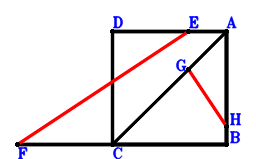
\(\because \) DCBA is a parallelogram \(\therefore \small\overrightarrow{BD}=\small\overrightarrow{BA} + \small\overrightarrow{BC}\).\(\because \) D, E, A are collinear and DE=2EA \(\therefore \small\overrightarrow{BE}=\dfrac{2 \small\overrightarrow{BA}}{3} + \dfrac{\small\overrightarrow{BD}}{3}=\small\overrightarrow{BA} + \dfrac{\small\overrightarrow{BC}}{3}\).\(\because \) F, C, B are collinear and 5FB=11FC \(\therefore \small\overrightarrow{BF}=\dfrac{11 \small\overrightarrow{BC}}{6}\).\(\because \) C, G, A are collinear and CG=2GA \(\therefore \small\overrightarrow{BG}=\dfrac{2 \small\overrightarrow{BA}}{3} + \dfrac{\small\overrightarrow{BC}}{3}\).\(\because \) A, H, B are collinear and AH=5HB \(\therefore \small\overrightarrow{BH}=\dfrac{\small\overrightarrow{BA}}{6}\).\(\because \) CB=AB \(\therefore - \small\overrightarrow{BA}^{2} + \small\overrightarrow{BC}^{2}=0\) . . . . . . \(①\)\(\because \) CB⊥BA \(\therefore \small\overrightarrow{BA} \cdot \small\overrightarrow{BC}=0\) . . . . . . \(②\)In conclusion, \(\small\overrightarrow{EF} \cdot \small\overrightarrow{GH}=\left(- \small\overrightarrow{BE} + \small\overrightarrow{BF}\right) \cdot \left(- \small\overrightarrow{BG} + \small\overrightarrow{BH}\right)=\left(- \small\overrightarrow{BA} + \dfrac{3 \small\overrightarrow{BC}}{2}\right) \cdot \left(- \dfrac{\small\overrightarrow{BA}}{2} - \dfrac{\small\overrightarrow{BC}}{3}\right)=\dfrac{\small\overrightarrow{BA}^{2}}{2} - \dfrac{5 \small\overrightarrow{BA} \cdot \small\overrightarrow{BC}}{12} - \dfrac{\small\overrightarrow{BC}^{2}}{2}=-1/2\cdot①-5/12\cdot②=0\), that is, FE⊥GH.
Exercise 1548： Let D, C, B be collinear and DB=3DC. C, E, A are collinear and CE=2EA. A, F, B are collinear and AF=5FB. CB⊥BA. CB=AB. Prove that DA⊥EF.
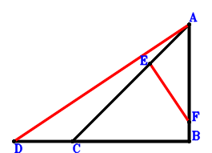
\(\because \) D, C, B are collinear and DB=3DC \(\therefore \small\overrightarrow{BD}=\dfrac{3 \small\overrightarrow{BC}}{2}\).\(\because \) C, E, A are collinear and CE=2EA \(\therefore \small\overrightarrow{BE}=\dfrac{2 \small\overrightarrow{BA}}{3} + \dfrac{\small\overrightarrow{BC}}{3}\).\(\because \) A, F, B are collinear and AF=5FB \(\therefore \small\overrightarrow{BF}=\dfrac{\small\overrightarrow{BA}}{6}\).\(\because \) CB=AB \(\therefore - \small\overrightarrow{BA}^{2} + \small\overrightarrow{BC}^{2}=0\) . . . . . . \(①\)\(\because \) CB⊥BA \(\therefore \small\overrightarrow{BA} \cdot \small\overrightarrow{BC}=0\) . . . . . . \(②\)In conclusion, \(\small\overrightarrow{AD} \cdot \small\overrightarrow{EF}=\left(- \small\overrightarrow{BA} + \small\overrightarrow{BD}\right) \cdot \left(- \small\overrightarrow{BE} + \small\overrightarrow{BF}\right)=\left(- \small\overrightarrow{BA} + \dfrac{3 \small\overrightarrow{BC}}{2}\right) \cdot \left(- \dfrac{\small\overrightarrow{BA}}{2} - \dfrac{\small\overrightarrow{BC}}{3}\right)=\dfrac{\small\overrightarrow{BA}^{2}}{2} - \dfrac{5 \small\overrightarrow{BA} \cdot \small\overrightarrow{BC}}{12} - \dfrac{\small\overrightarrow{BC}^{2}}{2}=-1/2\cdot①-5/12\cdot②=0\), that is, DA⊥EF.
Exercise 1550： Let DCBA be a square. ACBG is a trapezoid with CB//AG and 2CB=3AG. D, E, A are collinear and DE=2EA. F, C, B are collinear and 5FB=11FC. H is the midpoint of BG. Prove that FE⊥AH.
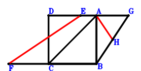
\(\because \) DCBA is a parallelogram \(\therefore \small\overrightarrow{BD}=\small\overrightarrow{BA} + \small\overrightarrow{BC}\).\(\because \) D, E, A are collinear and DE=2EA \(\therefore \small\overrightarrow{BE}=\dfrac{2 \small\overrightarrow{BA}}{3} + \dfrac{\small\overrightarrow{BD}}{3}=\small\overrightarrow{BA} + \dfrac{\small\overrightarrow{BC}}{3}\).\(\because \) F, C, B are collinear and 5FB=11FC \(\therefore \small\overrightarrow{BF}=\dfrac{11 \small\overrightarrow{BC}}{6}\).\(\because \) CB//AG and 2CB=3AG \(\therefore \small\overrightarrow{BG}=\small\overrightarrow{BA} - \dfrac{2 \small\overrightarrow{BC}}{3}\).\(\because \) H is the midpoint of BG \(\therefore \small\overrightarrow{BH}=\dfrac{\small\overrightarrow{BG}}{2}=\dfrac{\small\overrightarrow{BA}}{2} - \dfrac{\small\overrightarrow{BC}}{3}\).\(\because \) CB=AB \(\therefore - \small\overrightarrow{BA}^{2} + \small\overrightarrow{BC}^{2}=0\) . . . . . . \(①\)\(\because \) CB⊥BA \(\therefore \small\overrightarrow{BA} \cdot \small\overrightarrow{BC}=0\) . . . . . . \(②\)In conclusion, \(\small\overrightarrow{AH} \cdot \small\overrightarrow{EF}=\left(- \small\overrightarrow{BA} + \small\overrightarrow{BH}\right) \cdot \left(- \small\overrightarrow{BE} + \small\overrightarrow{BF}\right)=\left(- \small\overrightarrow{BA} + \dfrac{3 \small\overrightarrow{BC}}{2}\right) \cdot \left(- \dfrac{\small\overrightarrow{BA}}{2} - \dfrac{\small\overrightarrow{BC}}{3}\right)=\dfrac{\small\overrightarrow{BA}^{2}}{2} - \dfrac{5 \small\overrightarrow{BA} \cdot \small\overrightarrow{BC}}{12} - \dfrac{\small\overrightarrow{BC}^{2}}{2}=-1/2\cdot①-5/12\cdot②=0\), that is, FE⊥AH.
Exercise 1552： Let DCBA be a square. GCBH is a trapezoid with CB//GH and CB=3GH. D, E, A are collinear and DE=2EA. F, C, B are collinear and 5FB=11FC. G is the midpoint of AB. Prove that FE⊥AH.
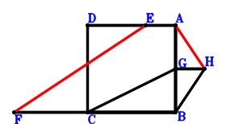
\(\because \) DCBA is a parallelogram \(\therefore \small\overrightarrow{BD}=\small\overrightarrow{BA} + \small\overrightarrow{BC}\).\(\because \) D, E, A are collinear and DE=2EA \(\therefore \small\overrightarrow{BE}=\dfrac{2 \small\overrightarrow{BA}}{3} + \dfrac{\small\overrightarrow{BD}}{3}=\small\overrightarrow{BA} + \dfrac{\small\overrightarrow{BC}}{3}\).\(\because \) F, C, B are collinear and 5FB=11FC \(\therefore \small\overrightarrow{BF}=\dfrac{11 \small\overrightarrow{BC}}{6}\).\(\because \) G is the midpoint of AB \(\therefore \small\overrightarrow{BG}=\dfrac{\small\overrightarrow{BA}}{2}\).\(\because \) CB//GH and CB=3GH \(\therefore \small\overrightarrow{BH}=\dfrac{\small\overrightarrow{BA}}{2} - \dfrac{\small\overrightarrow{BC}}{3}\).\(\because \) CB=AB \(\therefore - \small\overrightarrow{BA}^{2} + \small\overrightarrow{BC}^{2}=0\) . . . . . . \(①\)\(\because \) CB⊥BA \(\therefore \small\overrightarrow{BA} \cdot \small\overrightarrow{BC}=0\) . . . . . . \(②\)In conclusion, \(\small\overrightarrow{AH} \cdot \small\overrightarrow{EF}=\left(- \small\overrightarrow{BA} + \small\overrightarrow{BH}\right) \cdot \left(- \small\overrightarrow{BE} + \small\overrightarrow{BF}\right)=\left(- \small\overrightarrow{BA} + \dfrac{3 \small\overrightarrow{BC}}{2}\right) \cdot \left(- \dfrac{\small\overrightarrow{BA}}{2} - \dfrac{\small\overrightarrow{BC}}{3}\right)=\dfrac{\small\overrightarrow{BA}^{2}}{2} - \dfrac{5 \small\overrightarrow{BA} \cdot \small\overrightarrow{BC}}{12} - \dfrac{\small\overrightarrow{BC}^{2}}{2}=-1/2\cdot①-5/12\cdot②=0\), that is, FE⊥AH.
Exercise 1562： Let DCBA be a trapezoid with CB//DA and CB=3DA. E, C, B are collinear and 5EB=11EC. F is the midpoint of AB. CB⊥BA. CB=AB. Prove that ED⊥DF.
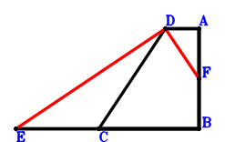
\(\because \) CB//DA and CB=3DA \(\therefore \small\overrightarrow{BD}=\small\overrightarrow{BA} + \dfrac{\small\overrightarrow{BC}}{3}\).\(\because \) E, C, B are collinear and 5EB=11EC \(\therefore \small\overrightarrow{BE}=\dfrac{11 \small\overrightarrow{BC}}{6}\).\(\because \) F is the midpoint of AB \(\therefore \small\overrightarrow{BF}=\dfrac{\small\overrightarrow{BA}}{2}\).\(\because \) CB=AB \(\therefore - \small\overrightarrow{BA}^{2} + \small\overrightarrow{BC}^{2}=0\) . . . . . . \(①\)\(\because \) CB⊥BA \(\therefore \small\overrightarrow{BA} \cdot \small\overrightarrow{BC}=0\) . . . . . . \(②\)In conclusion, \(\small\overrightarrow{DE} \cdot \small\overrightarrow{DF}=\left(- \small\overrightarrow{BD} + \small\overrightarrow{BE}\right) \cdot \left(- \small\overrightarrow{BD} + \small\overrightarrow{BF}\right)=\left(- \small\overrightarrow{BA} + \dfrac{3 \small\overrightarrow{BC}}{2}\right) \cdot \left(- \dfrac{\small\overrightarrow{BA}}{2} - \dfrac{\small\overrightarrow{BC}}{3}\right)=\dfrac{\small\overrightarrow{BA}^{2}}{2} - \dfrac{5 \small\overrightarrow{BA} \cdot \small\overrightarrow{BC}}{12} - \dfrac{\small\overrightarrow{BC}^{2}}{2}=-1/2\cdot①-5/12\cdot②=0\), that is, ED⊥DF.
Exercise 1564： Let DCBA be a trapezoid with CB//DA and CB=3DA. DFBA is a trapezoid with AB//DF and AB=3DF. C, F, A are collinear and CF=2FA. E, C, B are collinear and 5EB=11EC. G is the midpoint of AB. CB⊥BA. CB=AB. Prove that ED⊥DG.
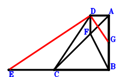
\(\because \) CB//DA and CB=3DA \(\therefore \small\overrightarrow{BD}=\small\overrightarrow{BA} + \dfrac{\small\overrightarrow{BC}}{3}\).\(\because \) E, C, B are collinear and 5EB=11EC \(\therefore \small\overrightarrow{BE}=\dfrac{11 \small\overrightarrow{BC}}{6}\).\(\because \) C, F, A are collinear and CF=2FA \(\therefore \small\overrightarrow{BF}=\dfrac{2 \small\overrightarrow{BA}}{3} + \dfrac{\small\overrightarrow{BC}}{3}\).\(\because \) AB//DF and AB=3DF \(\therefore \small\overrightarrow{BG}=\dfrac{\small\overrightarrow{BA}}{2}\).\(\because \) G is the midpoint of AB \(\therefore - \small\overrightarrow{BA}^{2} + \small\overrightarrow{BC}^{2}=0\) . . . . . . \(①\)\(\because \) CB=AB \(\therefore \small\overrightarrow{BA} \cdot \small\overrightarrow{BC}=0\) . . . . . . \(②\)In conclusion, \(\small\overrightarrow{DE} \cdot \small\overrightarrow{DG}=\left(- \small\overrightarrow{BD} + \small\overrightarrow{BE}\right) \cdot \left(- \small\overrightarrow{BD} + \small\overrightarrow{BG}\right)=\left(- \small\overrightarrow{BA} + \dfrac{3 \small\overrightarrow{BC}}{2}\right) \cdot \left(- \dfrac{\small\overrightarrow{BA}}{2} - \dfrac{\small\overrightarrow{BC}}{3}\right)=\dfrac{\small\overrightarrow{BA}^{2}}{2} - \dfrac{5 \small\overrightarrow{BA} \cdot \small\overrightarrow{BC}}{12} - \dfrac{\small\overrightarrow{BC}^{2}}{2}=-1/2\cdot①-5/12\cdot②=0\), that is, ED⊥DG.
Exercise 1565： Let DCBA be a square. ECBA is a trapezoid with CB//EA and CB=3EA. D, E, A are collinear and DE=2EA. F, C, B are collinear and 5FB=11FC. G is the midpoint of AB. Prove that FE⊥EG.
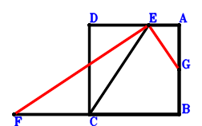
\(\because \) DCBA is a parallelogram \(\therefore \small\overrightarrow{BD}=\small\overrightarrow{BA} + \small\overrightarrow{BC}\).\(\because \) D, E, A are collinear and DE=2EA \(\therefore \small\overrightarrow{BE}=\dfrac{2 \small\overrightarrow{BA}}{3} + \dfrac{\small\overrightarrow{BD}}{3}=\small\overrightarrow{BA} + \dfrac{\small\overrightarrow{BC}}{3}\).\(\because \) F, C, B are collinear and 5FB=11FC \(\therefore \small\overrightarrow{BF}=\dfrac{11 \small\overrightarrow{BC}}{6}\).\(\because \) CB//EA and CB=3EA \(\therefore \small\overrightarrow{BG}=\dfrac{\small\overrightarrow{BA}}{2}\).\(\because \) G is the midpoint of AB \(\therefore - \small\overrightarrow{BA}^{2} + \small\overrightarrow{BC}^{2}=0\) . . . . . . \(①\)\(\because \) CB=AB \(\therefore \small\overrightarrow{BA} \cdot \small\overrightarrow{BC}=0\) . . . . . . \(②\)In conclusion, \(\small\overrightarrow{EF} \cdot \small\overrightarrow{EG}=\left(- \small\overrightarrow{BE} + \small\overrightarrow{BF}\right) \cdot \left(- \small\overrightarrow{BE} + \small\overrightarrow{BG}\right)=\left(- \small\overrightarrow{BA} + \dfrac{3 \small\overrightarrow{BC}}{2}\right) \cdot \left(- \dfrac{\small\overrightarrow{BA}}{2} - \dfrac{\small\overrightarrow{BC}}{3}\right)=\dfrac{\small\overrightarrow{BA}^{2}}{2} - \dfrac{5 \small\overrightarrow{BA} \cdot \small\overrightarrow{BC}}{12} - \dfrac{\small\overrightarrow{BC}^{2}}{2}=-1/2\cdot①-5/12\cdot②=0\), that is, FE⊥EG.
Exercise 1569： Let DCBA be a square. GCBA is a trapezoid with CB//GA and CB=2GA. D, E, A are collinear and DE=2EA. G, E, A are collinear and EA=2GE. F, C, B are collinear and 5FB=11FC. H is the midpoint of AB. Prove that FE⊥EH.
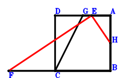
\(\because \) DCBA is a parallelogram \(\therefore \small\overrightarrow{BD}=\small\overrightarrow{BA} + \small\overrightarrow{BC}\).\(\because \) D, E, A are collinear and DE=2EA \(\therefore \small\overrightarrow{BE}=\dfrac{2 \small\overrightarrow{BA}}{3} + \dfrac{\small\overrightarrow{BD}}{3}=\small\overrightarrow{BA} + \dfrac{\small\overrightarrow{BC}}{3}\).\(\because \) F, C, B are collinear and 5FB=11FC \(\therefore \small\overrightarrow{BF}=\dfrac{11 \small\overrightarrow{BC}}{6}\).\(\because \) CB//GA and CB=2GA \(\therefore \small\overrightarrow{BG}=\small\overrightarrow{BA} + \dfrac{\small\overrightarrow{BC}}{2}\).\(\because \) G, E, A are collinear and EA=2GE \(\therefore \small\overrightarrow{BH}=\dfrac{\small\overrightarrow{BA}}{2}\).\(\because \) H is the midpoint of AB \(\therefore - \small\overrightarrow{BA}^{2} + \small\overrightarrow{BC}^{2}=0\) . . . . . . \(①\)\(\because \) CB=AB \(\therefore \small\overrightarrow{BA} \cdot \small\overrightarrow{BC}=0\) . . . . . . \(②\)In conclusion, \(\small\overrightarrow{EF} \cdot \small\overrightarrow{EH}=\left(- \small\overrightarrow{BE} + \small\overrightarrow{BF}\right) \cdot \left(- \small\overrightarrow{BE} + \small\overrightarrow{BH}\right)=\left(- \small\overrightarrow{BA} + \dfrac{3 \small\overrightarrow{BC}}{2}\right) \cdot \left(- \dfrac{\small\overrightarrow{BA}}{2} - \dfrac{\small\overrightarrow{BC}}{3}\right)=\dfrac{\small\overrightarrow{BA}^{2}}{2} - \dfrac{5 \small\overrightarrow{BA} \cdot \small\overrightarrow{BC}}{12} - \dfrac{\small\overrightarrow{BC}^{2}}{2}=-1/2\cdot①-5/12\cdot②=0\), that is, FE⊥EH.
Exercise 1573： Let DCBA be a square. D, E, A are collinear and DE=2EA. F, C, B are collinear and 5FB=11FC. G is the midpoint of AB. Prove that FE⊥EG.
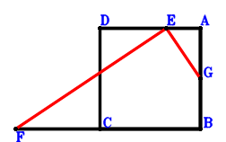
\(\because \) DCBA is a parallelogram \(\therefore \small\overrightarrow{BD}=\small\overrightarrow{BA} + \small\overrightarrow{BC}\).\(\because \) D, E, A are collinear and DE=2EA \(\therefore \small\overrightarrow{BE}=\dfrac{2 \small\overrightarrow{BA}}{3} + \dfrac{\small\overrightarrow{BD}}{3}=\small\overrightarrow{BA} + \dfrac{\small\overrightarrow{BC}}{3}\).\(\because \) F, C, B are collinear and 5FB=11FC \(\therefore \small\overrightarrow{BF}=\dfrac{11 \small\overrightarrow{BC}}{6}\).\(\because \) G is the midpoint of AB \(\therefore \small\overrightarrow{BG}=\dfrac{\small\overrightarrow{BA}}{2}\).\(\because \) CB=AB \(\therefore - \small\overrightarrow{BA}^{2} + \small\overrightarrow{BC}^{2}=0\) . . . . . . \(①\)\(\because \) CB⊥BA \(\therefore \small\overrightarrow{BA} \cdot \small\overrightarrow{BC}=0\) . . . . . . \(②\)In conclusion, \(\small\overrightarrow{EF} \cdot \small\overrightarrow{EG}=\left(- \small\overrightarrow{BE} + \small\overrightarrow{BF}\right) \cdot \left(- \small\overrightarrow{BE} + \small\overrightarrow{BG}\right)=\left(- \small\overrightarrow{BA} + \dfrac{3 \small\overrightarrow{BC}}{2}\right) \cdot \left(- \dfrac{\small\overrightarrow{BA}}{2} - \dfrac{\small\overrightarrow{BC}}{3}\right)=\dfrac{\small\overrightarrow{BA}^{2}}{2} - \dfrac{5 \small\overrightarrow{BA} \cdot \small\overrightarrow{BC}}{12} - \dfrac{\small\overrightarrow{BC}^{2}}{2}=-1/2\cdot①-5/12\cdot②=0\), that is, FE⊥EG.
Exercise 1574： Let GCBA be a square. EDBA is a trapezoid with AB//ED and AB=3ED. C, D, A are collinear and CD=2DA. F, C, B are collinear and 5FB=11FC. G, E, A are collinear and GE=2EA. H is the midpoint of AB. Prove that FE⊥EH.
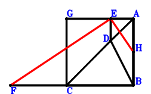
\(\because \) C, D, A are collinear and CD=2DA \(\therefore \small\overrightarrow{BD}=\dfrac{2 \small\overrightarrow{BA}}{3} + \dfrac{\small\overrightarrow{BC}}{3}\).\(\because \) AB//ED and AB=3ED \(\therefore \small\overrightarrow{BE}=\small\overrightarrow{BA} + \dfrac{\small\overrightarrow{BC}}{3}\).\(\because \) F, C, B are collinear and 5FB=11FC \(\therefore \small\overrightarrow{BF}=\dfrac{11 \small\overrightarrow{BC}}{6}\).\(\because \) GCBA is a parallelogram \(\therefore \small\overrightarrow{BG}=\small\overrightarrow{BA} + \small\overrightarrow{BC}\).\(\because \) G, E, A are collinear and GE=2EA \(\therefore \small\overrightarrow{BH}=\dfrac{\small\overrightarrow{BA}}{2}\).\(\because \) H is the midpoint of AB \(\therefore - \small\overrightarrow{BA}^{2} + \small\overrightarrow{BC}^{2}=0\) . . . . . . \(①\)\(\because \) CB=AB \(\therefore \small\overrightarrow{BA} \cdot \small\overrightarrow{BC}=0\) . . . . . . \(②\)In conclusion, \(\small\overrightarrow{EF} \cdot \small\overrightarrow{EH}=\left(- \small\overrightarrow{BE} + \small\overrightarrow{BF}\right) \cdot \left(- \small\overrightarrow{BE} + \small\overrightarrow{BH}\right)=\left(- \small\overrightarrow{BA} + \dfrac{3 \small\overrightarrow{BC}}{2}\right) \cdot \left(- \dfrac{\small\overrightarrow{BA}}{2} - \dfrac{\small\overrightarrow{BC}}{3}\right)=\dfrac{\small\overrightarrow{BA}^{2}}{2} - \dfrac{5 \small\overrightarrow{BA} \cdot \small\overrightarrow{BC}}{12} - \dfrac{\small\overrightarrow{BC}^{2}}{2}=-1/2\cdot①-5/12\cdot②=0\), that is, FE⊥EH.
Exercise 1577： Let EDBA be a trapezoid with AB//ED and AB=3ED. C, D, A are collinear and CD=2DA. F, C, B are collinear and 5FB=11FC. G is the midpoint of AB. CB⊥BA. CB=AB. Prove that FE⊥EG.
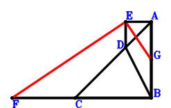
\(\because \) C, D, A are collinear and CD=2DA \(\therefore \small\overrightarrow{BD}=\dfrac{2 \small\overrightarrow{BA}}{3} + \dfrac{\small\overrightarrow{BC}}{3}\).\(\because \) AB//ED and AB=3ED \(\therefore \small\overrightarrow{BE}=\small\overrightarrow{BA} + \dfrac{\small\overrightarrow{BC}}{3}\).\(\because \) F, C, B are collinear and 5FB=11FC \(\therefore \small\overrightarrow{BF}=\dfrac{11 \small\overrightarrow{BC}}{6}\).\(\because \) G is the midpoint of AB \(\therefore \small\overrightarrow{BG}=\dfrac{\small\overrightarrow{BA}}{2}\).\(\because \) CB=AB \(\therefore - \small\overrightarrow{BA}^{2} + \small\overrightarrow{BC}^{2}=0\) . . . . . . \(①\)\(\because \) CB⊥BA \(\therefore \small\overrightarrow{BA} \cdot \small\overrightarrow{BC}=0\) . . . . . . \(②\)In conclusion, \(\small\overrightarrow{EF} \cdot \small\overrightarrow{EG}=\left(- \small\overrightarrow{BE} + \small\overrightarrow{BF}\right) \cdot \left(- \small\overrightarrow{BE} + \small\overrightarrow{BG}\right)=\left(- \small\overrightarrow{BA} + \dfrac{3 \small\overrightarrow{BC}}{2}\right) \cdot \left(- \dfrac{\small\overrightarrow{BA}}{2} - \dfrac{\small\overrightarrow{BC}}{3}\right)=\dfrac{\small\overrightarrow{BA}^{2}}{2} - \dfrac{5 \small\overrightarrow{BA} \cdot \small\overrightarrow{BC}}{12} - \dfrac{\small\overrightarrow{BC}^{2}}{2}=-1/2\cdot①-5/12\cdot②=0\), that is, FE⊥EG.
Exercise 1579： Let AEFB be a trapezoid with AB//EF and AB=3EF. A, G, B are collinear and AG=5GB. C, D, A are collinear and CD=2DA. E, C, B are collinear and 5EB=11EC. CB⊥BA. CB=AB. Prove that FD⊥DG.
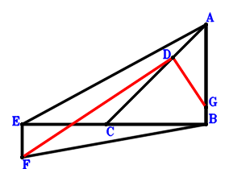
\(\because \) C, D, A are collinear and CD=2DA \(\therefore \small\overrightarrow{BD}=\dfrac{2 \small\overrightarrow{BA}}{3} + \dfrac{\small\overrightarrow{BC}}{3}\).\(\because \) E, C, B are collinear and 5EB=11EC \(\therefore \small\overrightarrow{BE}=\dfrac{11 \small\overrightarrow{BC}}{6}\).\(\because \) AB//EF and AB=3EF \(\therefore \small\overrightarrow{BF}=- \dfrac{\small\overrightarrow{BA}}{3} + \dfrac{11 \small\overrightarrow{BC}}{6}\).\(\because \) A, G, B are collinear and AG=5GB \(\therefore \small\overrightarrow{BG}=\dfrac{\small\overrightarrow{BA}}{6}\).\(\because \) CB=AB \(\therefore - \small\overrightarrow{BA}^{2} + \small\overrightarrow{BC}^{2}=0\) . . . . . . \(①\)\(\because \) CB⊥BA \(\therefore \small\overrightarrow{BA} \cdot \small\overrightarrow{BC}=0\) . . . . . . \(②\)In conclusion, \(\small\overrightarrow{DF} \cdot \small\overrightarrow{DG}=\left(- \small\overrightarrow{BD} + \small\overrightarrow{BF}\right) \cdot \left(- \small\overrightarrow{BD} + \small\overrightarrow{BG}\right)=\left(- \small\overrightarrow{BA} + \dfrac{3 \small\overrightarrow{BC}}{2}\right) \cdot \left(- \dfrac{\small\overrightarrow{BA}}{2} - \dfrac{\small\overrightarrow{BC}}{3}\right)=\dfrac{\small\overrightarrow{BA}^{2}}{2} - \dfrac{5 \small\overrightarrow{BA} \cdot \small\overrightarrow{BC}}{12} - \dfrac{\small\overrightarrow{BC}^{2}}{2}=-1/2\cdot①-5/12\cdot②=0\), that is, FD⊥DG.
Exercise 1580： Let DBFE be a trapezoid with BF//DE and BF=3DE. C, D, A are collinear and CD=2DA. G, C, B are collinear and GB=3GC. E is the midpoint of AB. CB⊥BA. CB=AB. Prove that GA⊥AF.
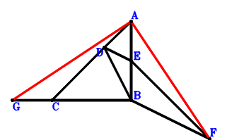
\(\because \) C, D, A are collinear and CD=2DA \(\therefore \small\overrightarrow{BD}=\dfrac{2 \small\overrightarrow{BA}}{3} + \dfrac{\small\overrightarrow{BC}}{3}\).\(\because \) E is the midpoint of AB \(\therefore \small\overrightarrow{BE}=\dfrac{\small\overrightarrow{BA}}{2}\).\(\because \) BF//DE and BF=3DE \(\therefore \small\overrightarrow{BF}=\dfrac{3 \small\overrightarrow{BA}}{2} - 3 \small\overrightarrow{BD}=- \dfrac{\small\overrightarrow{BA}}{2} - \small\overrightarrow{BC}\).\(\because \) G, C, B are collinear and GB=3GC \(\therefore \small\overrightarrow{BG}=\dfrac{3 \small\overrightarrow{BC}}{2}\).\(\because \) CB=AB \(\therefore - \small\overrightarrow{BA}^{2} + \small\overrightarrow{BC}^{2}=0\) . . . . . . \(①\)\(\because \) CB⊥BA \(\therefore \small\overrightarrow{BA} \cdot \small\overrightarrow{BC}=0\) . . . . . . \(②\)In conclusion, \(\small\overrightarrow{AF} \cdot \small\overrightarrow{AG}=\left(- \small\overrightarrow{BA} + \small\overrightarrow{BF}\right) \cdot \left(- \small\overrightarrow{BA} + \small\overrightarrow{BG}\right)=\left(- \dfrac{3 \small\overrightarrow{BA}}{2} - \small\overrightarrow{BC}\right) \cdot \left(- \small\overrightarrow{BA} + \dfrac{3 \small\overrightarrow{BC}}{2}\right)=\dfrac{3 \small\overrightarrow{BA}^{2}}{2} - \dfrac{5 \small\overrightarrow{BA} \cdot \small\overrightarrow{BC}}{4} - \dfrac{3 \small\overrightarrow{BC}^{2}}{2}=-3/2\cdot①-5/4\cdot②=0\), that is, GA⊥AF.
Exercise 1582： Let ACBE be a trapezoid with CB//AE and 2CB=3AE. D, C, B are collinear and DB=3DC. F is the midpoint of BE. CB⊥BA. CB=AB. Prove that DA⊥AF.
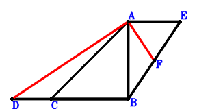
\(\because \) D, C, B are collinear and DB=3DC \(\therefore \small\overrightarrow{BD}=\dfrac{3 \small\overrightarrow{BC}}{2}\).\(\because \) CB//AE and 2CB=3AE \(\therefore \small\overrightarrow{BE}=\small\overrightarrow{BA} - \dfrac{2 \small\overrightarrow{BC}}{3}\).\(\because \) F is the midpoint of BE \(\therefore \small\overrightarrow{BF}=\dfrac{\small\overrightarrow{BE}}{2}=\dfrac{\small\overrightarrow{BA}}{2} - \dfrac{\small\overrightarrow{BC}}{3}\).\(\because \) CB=AB \(\therefore - \small\overrightarrow{BA}^{2} + \small\overrightarrow{BC}^{2}=0\) . . . . . . \(①\)\(\because \) CB⊥BA \(\therefore \small\overrightarrow{BA} \cdot \small\overrightarrow{BC}=0\) . . . . . . \(②\)In conclusion, \(\small\overrightarrow{AD} \cdot \small\overrightarrow{AF}=\left(- \small\overrightarrow{BA} + \small\overrightarrow{BD}\right) \cdot \left(- \small\overrightarrow{BA} + \small\overrightarrow{BF}\right)=\left(- \small\overrightarrow{BA} + \dfrac{3 \small\overrightarrow{BC}}{2}\right) \cdot \left(- \dfrac{\small\overrightarrow{BA}}{2} - \dfrac{\small\overrightarrow{BC}}{3}\right)=\dfrac{\small\overrightarrow{BA}^{2}}{2} - \dfrac{5 \small\overrightarrow{BA} \cdot \small\overrightarrow{BC}}{12} - \dfrac{\small\overrightarrow{BC}^{2}}{2}=-1/2\cdot①-5/12\cdot②=0\), that is, DA⊥AF.
Exercise 1584： Let ECBF be a trapezoid with CB//EF and CB=3EF. D, C, B are collinear and DB=3DC. E is the midpoint of AB. CB⊥BA. CB=AB. Prove that DA⊥AF.
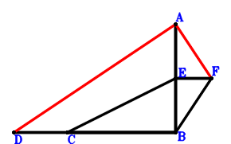
\(\because \) D, C, B are collinear and DB=3DC \(\therefore \small\overrightarrow{BD}=\dfrac{3 \small\overrightarrow{BC}}{2}\).\(\because \) E is the midpoint of AB \(\therefore \small\overrightarrow{BE}=\dfrac{\small\overrightarrow{BA}}{2}\).\(\because \) CB//EF and CB=3EF \(\therefore \small\overrightarrow{BF}=\dfrac{\small\overrightarrow{BA}}{2} - \dfrac{\small\overrightarrow{BC}}{3}\).\(\because \) CB=AB \(\therefore - \small\overrightarrow{BA}^{2} + \small\overrightarrow{BC}^{2}=0\) . . . . . . \(①\)\(\because \) CB⊥BA \(\therefore \small\overrightarrow{BA} \cdot \small\overrightarrow{BC}=0\) . . . . . . \(②\)In conclusion, \(\small\overrightarrow{AD} \cdot \small\overrightarrow{AF}=\left(- \small\overrightarrow{BA} + \small\overrightarrow{BD}\right) \cdot \left(- \small\overrightarrow{BA} + \small\overrightarrow{BF}\right)=\left(- \small\overrightarrow{BA} + \dfrac{3 \small\overrightarrow{BC}}{2}\right) \cdot \left(- \dfrac{\small\overrightarrow{BA}}{2} - \dfrac{\small\overrightarrow{BC}}{3}\right)=\dfrac{\small\overrightarrow{BA}^{2}}{2} - \dfrac{5 \small\overrightarrow{BA} \cdot \small\overrightarrow{BC}}{12} - \dfrac{\small\overrightarrow{BC}^{2}}{2}=-1/2\cdot①-5/12\cdot②=0\), that is, DA⊥AF.